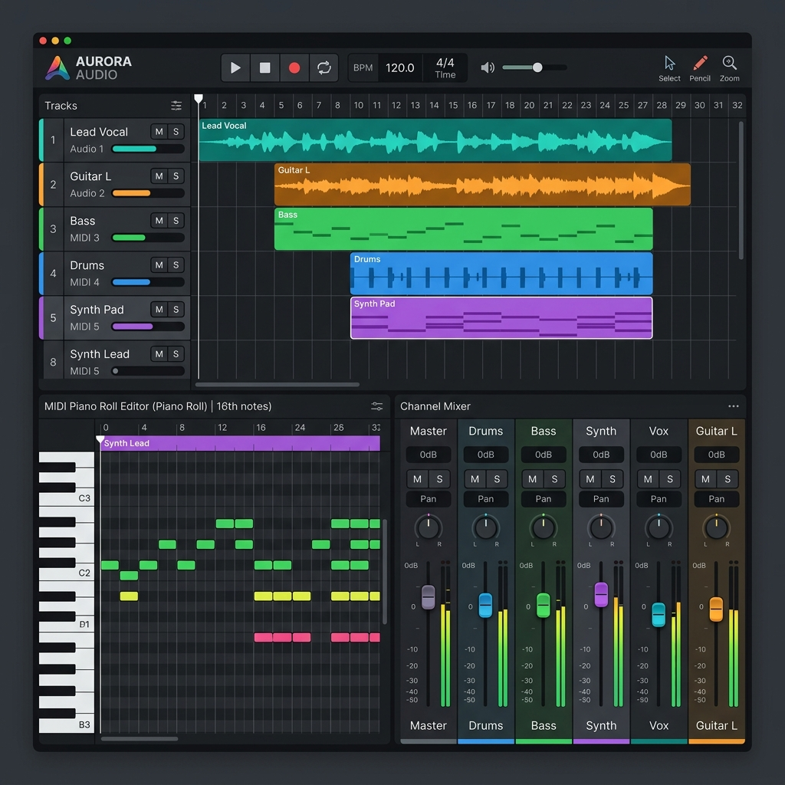
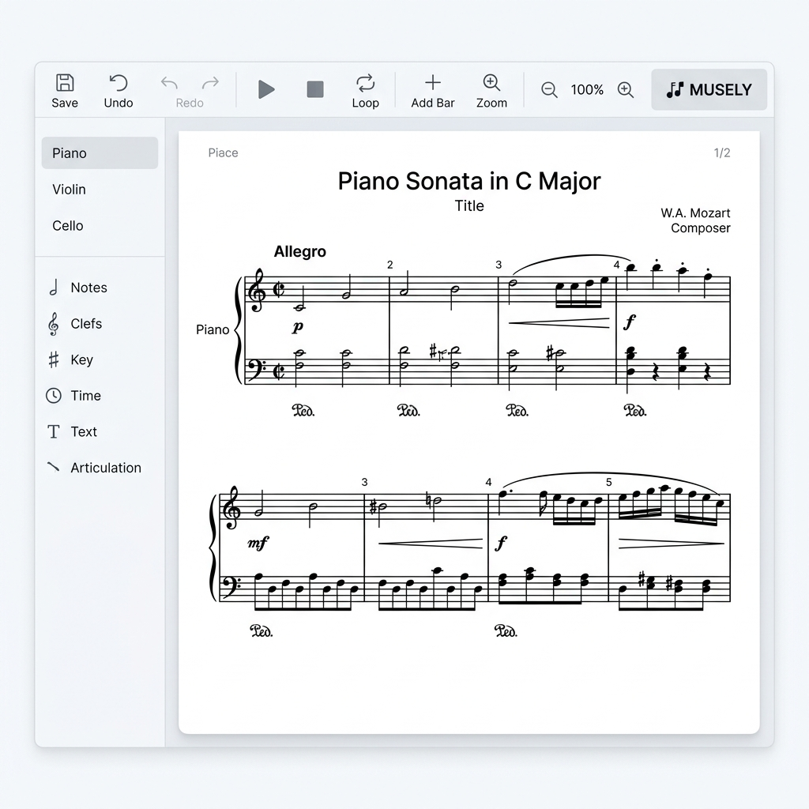

บทนำ: นิยามและขอบเขตของคอมพิวเตอร์ดนตรีและเทคโนโลยีดนตรี
คอมพิวเตอร์ดนตรี (Computer Music) และ เทคโนโลยีดนตรี (Music Technology) คือการประยุกต์ใช้ความรู้ด้านฟิสิกส์ วิศวกรรมไฟฟ้า คอมพิวเตอร์ และวิทยาการคำนวณ ร่วมกับทฤษฎีดนตรีเพื่อสร้างสรรค์ บันทึกเสียง ประมวลผล และเรียบเรียงผลงานเพลง โดยครอบคลุมกระบวนการตั้งแต่ต้นน้ำถึงปลายน้ำ ดังนี้:
- การแต่งเพลงและการเรียบเรียง (Composition & Arrangement): การใช้โปรแกรมคอมพิวเตอร์เพื่อบันทึกโน้ต เขียนคอร์ด และจำลองเครื่องดนตรีประเภทต่างๆ
- การบันทึกเสียง (Audio Recording): การรับคลื่นเสียงอนาล็อกจากโลกธรรมชาติมาแปลงเป็นรหัสดิจิทัลผ่านอุปกรณ์แปลงสัญญาณ
- การผสมสัญญาณเสียงและการคุมคุณภาพเสียง (Mixing & Mastering): การใช้ซอฟต์แวร์จัดสมดุลทางความถี่ มิติ สเตอริโอ ความดัง และความสะอาดของเสียงร้องเครื่องดนตรีทั้งหมด
การเรียนรู้ศาสตร์ด้านนี้จะช่วยให้นักเรียนสามารถก้าวข้ามจาก "ผู้บริโภคสื่อเสียง" ไปสู่ "ผู้ผลิตสร้างสรรค์เนื้อหาเสียง" (Prosumer) ที่สามารถสร้างผลงานที่มีคุณภาพทัดเทียมอุตสาหกรรมด้วยตนเองได้ในสตูดิโอขนาดพกพา
1. ฟิสิกส์ของเสียงและทฤษฎีออดิโอดิจิทัล (Physics of Sound & Digital Audio)
เสียงเป็นคลื่นกลเชิงกายภาพที่ต้องการตัวกลาง (อากาศ) ในการเดินทาง เกิดจากการสั่นสะเทือนของแหล่งกำเนิดเสียง คลื่นเสียงอนาล็อกมีความต่อเนื่องไร้จุดสิ้นสุด มีคุณสมบัติทางฟิสิกส์ที่สำคัญ 5 ประการ:
- Frequency (ความถี่): จำนวนรอบคลื่นที่สั่นสะเทือนต่อวินาที มีหน่วยเป็นเฮิรตซ์ (Hz) สัมพันธ์กับ ระดับเสียงทุ้ม-แหลม (Pitch) ย่านการรับเสียงของหูมนุษย์คือ 20 Hz ถึง 20,000 Hz (20 kHz)
- Amplitude (ความดัง): ความสูงของยอดคลื่นเสียงจากระดับสมดุล สัมพันธ์กับ ความรู้สึกดัง-เบา (Volume) มีหน่วยวัดในเชิงแรงดันสัมพัทธ์เป็นเดซิเบล (dB)
- Wavelength (ความยาวคลื่น - λ): ระยะทางของคลื่นเสียงที่เดินทางได้ใน 1 คาบเวลา มีสูตรคำนวณคือ
λ = v / f (v คือความเร็วเสียงในอากาศ = 343 เมตร/วินาที ที่ 20°C)
- Phase (เฟส): ตำแหน่งองศาเชิงมุมของคลื่น (0 - 360 องศา) หากมีแหล่งเสียง 2 แหล่งส่งคลื่นเสียงเดียวกันมาถึงหูเราโดยมีเฟสกลับด้านกัน 180 องศา คลื่นจะหักล้างกันเองทำให้ไม่ได้ยินเสียงร้องหรือเสียงจะทึบจม (**Phase Cancellation**)
- Timbre (สีสันเสียง/เอกลักษณ์เสียง): คาแรกเตอร์เสียงที่ทำให้เราแยกความแตกต่างระหว่างเครื่องดนตรี เช่น ขลุ่ยกับไวโอลินที่เป่า/เล่นโน้ตตัวเดียวกันได้ เกิดจากส่วนผสมของความถี่ประกอบย่อยเรียกว่า Harmonics และ Overtones ที่ไม่เท่ากัน
หลักการแปลงสัญญาณเสียงอะคูสติกเป็นสัญญาณดิจิทัล (ADC / DAC):
คอมพิวเตอร์เก็บข้อมูลในลักษณะเลขฐานสอง (0 และ 1) จึงต้องทำระบบสุ่มเก็บคลื่นไฟฟ้าอนาล็อกจากไมค์แปลงเป็นตัวเลข (Analog-to-Digital Conversion: ADC) และแปลงกลับเป็นกระแสไฟขับลำโพง (Digital-to-Analog Conversion: DAC) โดยมีตัวแปรวัดคุณภาพ 2 ตัวหลัก:
- Sample Rate (อัตราสุ่มตัวอย่าง): ความถี่ในการเก็บข้อมูลของระดับเสียงต่อหนึ่งวินาที ตามทฤษฎี Nyquist-Shannon Theorem อัตราสุ่มต้องมีความเร็วอย่างน้อย 2 เท่าของความถี่สูงสุดที่ต้องการบันทึก เพื่อป้องกันปัญหาความเพี้ยนสัญญาณหลอน (Aliasing) ด้วยเหตุนี้ อัตราสุ่มมาตรฐาน CD จึงตั้งไว้ที่ 44.1 kHz (เพราะหูมนุษย์ได้ยินสูงสุดที่ 20,000 Hz × 2 = 40,000 Hz แล้วเผื่อขอบสัญญาณรบกวน) และ 48 kHz ในระบบงานวีดีโอ/ภาพยนตร์
- Bit Depth (ความละเอียดบิต): ระดับพิกัดข้อมูลในแนวตั้งเพื่อจัดเก็บความดัง ยิ่งมีบิตมาก ช่วงไดนามิกความแตกต่างความดังที่บันทึกได้ (Dynamic Range) จะยิ่งสูงขึ้น โดยมีสูตรคำนวณทางทฤษฎีคือ 1 บิต ≈ 6 dB:
• 16-bit: ให้ไดนามิก 96 dB (มาตรฐาน CD ดนตรีทั่วไป)
• 24-bit: ให้ไดนามิก 144 dB (มาตรฐานการบันทึกเสียงและมิกซ์ดนตรีในสตูดิโอ เพื่อป้องกันสัญญาณตกขอบ)
• 32-bit Float: ประมวลผลแบบจุดทศนิยมลอยตัว ให้ไดนามิกทางทฤษฎีสูงสุดถึง 1500 dB ขจัดปัญหาเสียงคลิปปิ้ง (Digital Clipping) แตกพร่าเสียหายอย่างสิ้นเชิง แม้คลื่นจะดังเกิน 0 dBFS ก็สามารถกู้คืนได้สะอาดเมื่อดึง Gain ลงใน DAW
2. อุปกรณ์ฝั่งนำเข้าสัญญาณ (Input Stage Hardware)
ไมโครโฟนทำหน้าที่เปลี่ยนคลื่นเสียงสั่นสะเทือนในอากาศให้กลายเป็นคลื่นกระแสไฟฟ้าอนาล็อก (Transducer) แบ่งออกเป็น 3 ประเภทหลักตามลักษณะทางวิศวกรรมการทำงาน:
Dynamic Microphone
(ทนทาน รองรับเสียงดังมาก เช่น Shure SM58)
Condenser Microphone
(ไวต่อเสียง ความละเอียดสูง ต้องการไฟ +48V)
Ribbon Microphone
(โทนอุ่นคลาสสิก ห้ามจ่ายไฟ +48V เด็ดขาด)
- Dynamic Microphone (ไมค์ไดนามิก): ทำงานโดยใช้แผ่นไดอะแฟรมยึดขดลวดทองแดงสั่นไหวตัดสนามแม่เหล็กถาวรเพื่อเกิดกระแสไฟ
• คุณสมบัติ: ทนแรงกระแทกได้ดีมาก ตอบสนองความชื้นได้สูง ทนต่อระดับความกดดันเสียง (SPL) ได้สูงมากโดยไม่พร่าเพี้ยน ไม่ต้องการไฟเลี้ยง
• งานที่เหมาะสม: งานแสดงคอนเสิร์ตสดบนเวที การจ่อตู้แอมป์กีตาร์ หรือกลองชุด
- Condenser Microphone (ไมค์คอนเดนเซอร์): ทำงานโดยใช้การเปลี่ยนแปลงประจุไฟฟ้าระหว่างแผ่นฟอยล์ไดอะแฟรมบางเฉียบกับแผ่นโลหะตัวนำไฟฟ้าคงที่
• คุณสมบัติ: ไวต่อเสียงสูงมาก ตอบสนองความถี่สูงได้ละเอียด ถ่ายทอดความใสสะอาดและคาแรกเตอร์เสียงร้องได้ยอดเยี่ยม จำเป็นต้องจ่ายไฟเลี้ยง Phantom Power +48V เสมอ เพื่อป้อนเลี้ยงประจุ
• งานที่เหมาะสม: บันทึกเสียงร้องนำ งานพากย์เสียง และเครื่องดนตรีอะคูสติกเบาๆ ในห้องเงียบ
- Ribbon Microphone (ไมค์ริบบอน): ทำงานโดยใช้เส้นริบบอนอลูมิเนียมบางเฉียบห้อยระหว่างขั้วแม่เหล็ก
• คุณสมบัติ: ตอบสนองมิติรวดเร็ว ให้เสียงที่อุ่นนุ่มนวลเป็นธรรมชาติสูงสุด บอบบางเป็นพิเศษ ลมกระแทกแรงๆ อาจทำให้ริบบอนขาด และห้ามเปิด Phantom Power +48V ส่งหาไมค์ริบบอนเด็ดขาด เพราะไฟจะทำให้เส้นริบบอนร้อนและไหม้ขาดทันที
• งานที่เหมาะสม: บันทึกเสียงเครื่องเป่าทองเหลือง เครื่องสาย หรือตู้แอมป์กีตาร์แจ๊ส
ทิศทางการรับสัญญาณของไมโครโฟน (Polar Patterns):
- Cardioid (รูปหัวใจ): รับเสียงได้ดีที่สุดจากทิศทางด้านหน้า ปฏิเสธเสียงจากด้านหลังไมค์ เหมาะสมที่สุดสำหรับเสียงร้องทั่วไป
- Omnidirectional (รอบทิศทาง): รับเสียงเท่ากันหมด 360 องศา ไม่มี Proximity Effect (เสียงเบสจะบวมโตขึ้นเมื่อเข้าใกล้ไมค์) เหมาะสำหรับอัดวงร้องประสานเสียงหรือเก็บบรรยากาศห้อง
- Figure-8 (แปดสี่เหลี่ยม/สองทิศทาง): รับเสียงเฉพาะด้านหน้าและด้านหลังเท่าๆ กัน และตัดสัญญาณด้านข้างขวา-ซ้าย เหมาะกับการสัมภาษณ์แบบหันหน้าหากัน
MIDI Controllers & Keyboards:
เครื่องควบคุมคีย์บอร์ด MIDI **ไม่มีกำเนิดเสียงในตัวเด็ดขาด** ทำหน้าที่เพียงจับสัมผัสการควบคุมของนิ้วมือแล้วสร้างเป็นข้อมูลรหัสตัวเลข เรียกว่า MIDI Data เช่น ตัวโน้ตคีย์ใดถูกกด (Note On), ปล่อยเมื่อใด (Note Off), น้ำหนักความดังในการกด (Velocity 0-127) และการบิดปรับพารามิเตอร์อื่นๆ (Control Change - CC) ส่งคำสั่งนี้ไปยังโปรแกรม DAW เพื่อสั่งเสียงปลั๊กอินเครื่องดนตรีเสมือนอีกทอดหนึ่ง
3. ตัวประมวลผลสัญญาณหลัก (Audio Interface & Signal Chains)
ออดิโออินเตอร์เฟสทำหน้าที่เป็นฮับแปลงสัญญาณและเป็นสะพานเชื่อมต่อเสียงอนาล็อกและคอมพิวเตอร์:
- Microphone Preamplifier (พรีแอมป์ไมค์): เนื่องจากระดับสัญญาณกระแสไฟฟ้าจากไมค์ (Mic Level) มีระดับแรงดันไฟฟ้าต่ำมาก (ระดับมิลลิโวลต์) จึงต้องผ่านพรีแอมป์เพื่อขยายให้แรงดันสูงขึ้นได้มาตรฐานระบบ (Line Level) เพื่อขจัดสัญญาณรบกวน
- Latency (ความหน่วงเสียง): ระยะเวลาดีเลย์สะสมตั้งแต่รับเสียงเข้า แปลง ADC วิ่งประมวลผลใน DAW และแปลง DAC กลับออกลำโพง คำนวณจากสูตร:
Latency (ms) = (Buffer Size / Sample Rate) * 1000
• ถ้ากำหนด Buffer Size ต่ำ (เช่น 64 หรือ 128 samples): จะประมวลผลไวมากจนไม่มีความดีเลย์ เหมาะแก่การบันทึกเสียงร้องสด แต่ CPU จะทำงานหนักขึ้น หากช้าอาจมีเสียงแตกเปรี๊ยะ (Clicks/Pops)
• ถ้ากำหนด Buffer Size สูง (เช่น 512 หรือ 1024 samples): เครื่องมีเวลาสะสมพักออดิโอประมวลผล เหมาะกับการเปิดมิกซ์เพลงใส่ปลั๊กอินหนักๆ แต่เสียงร้องสดจะหน่วงช้า
- Balanced vs Unbalanced Line (ความแตกต่างสายสัญญาณเสียง):
• Unbalanced (สายไม่สมดุล - สาย TS กีตาร์, RCA): มีสายตัวนำไฟฟ้า 1 เส้นและกราวด์ 1 เส้น เมื่อมีคลื่นแม่เหล็กกวนภายนอกปนเข้ามา จะปนเปื้อนเข้าเสียงทันที หากเดินสายเกิน 5 เมตร เสียงฮัมจี่จะปรากฏชัด
• Balanced (สายสมดุล - สาย XLR ไมค์, TRS สามขั้ว): มีสายตัวนำสัญญาณ 2 เส้นประกอบขั้วบวก (Hot เฟสปกติ) และขั้วลบ (Cold เฟสกลับด้าน 180 องศา) ร่วมกับสายกราวด์ภายนอก เมื่อเดินทางถึงปลายทาง ระบบรับจะสลับเฟสสาย Cold กลับมาเป็นเฟสปกติแล้วนำไปรวมพลังงานกับ Hot ส่งผลให้เสียงร้องหลักรวมกันและขยายดังขึ้นเป็นเท่าตัว ขณะที่เสียงรบกวนภายนอกที่ปนเข้ามาเท่าๆ กันระหว่างทางจะถูกหักล้างออกไปจนเป็นศูนย์ ปรากฏการณ์นี้เรียกว่า Common Mode Rejection Ratio (CMRR) ทำให้เดินสายได้ไกลเป็นสิบเมตรโดยปราศจากเสียงจี่
4. อุปกรณ์ส่งสัญญาณออดิโอและสภาพอะคูสติกการฟัง (Output Stage & Acoustics)
การมอนิเตอร์เสียงที่ดีจำเป็นต้องได้รับข้อมูลย่านเสียงที่เที่ยงตรง ปราศจากการปรุงแต่ง:
- Studio Monitors: ลำโพงที่ตอบสนองความถี่แบนราบ (Flat Frequency Response) เพื่อป้องกันวิศวกรเสียงจากการตกแต่งสีสันเบส/แหลม มักเป็นลำโพงแบบ Active Bi-amped ที่มีตัวขับแอมป์แยกเสียงทุ้ม (Woofer) และเสียงแหลม (Tweeter) อย่างอิสระภายในตู้
- Closed-back Headphones: หูฟังหลังปิดทึบ ป้องกันเสียงดนตรีเล็ดลอดเล็ดลอดออกนอกครอบหู เหมาะสำหรับการบันทึกเสียงร้องสด (Tracking) เพื่อไม่ให้เสียงไกด์เพลงหรือ Click Track ไหลเข้าไปเข้าหัวไมค์
- Open-back Headphones: หูฟังตะแกรงหลังเปิดโล่ง ระบายแรงดันอากาศ ลดการบิดเบือนของย่านเบส มิติมุมมองเสียงสเตอริโอกว้างขวางเป็นธรรมชาติ เหมาะสำหรับการมิกซ์เสียงและคุมคุณภาพดนตรีในห้องเก็บเสียงที่เงียบ
- Acoustic Treatment: การจัดระเบียบทิศทางเสียงในห้องฟังเพลง:
• Absorption (การดูดซับ): ใช้แผ่นใยแก้ว ฟองน้ำซับเสียง หรือ Bass Traps ตามมุมห้องเพื่อกลืนซับพลังงานเสียงทุ้มต่ำและลดมิติกังวานสะท้อนก้อง
• Diffusion (การกระจายเสียง): ใช้แผงกระจายเสียงผิวขรุขระเพื่อกระจายคลื่นความถี่สูงและกลางไม่ให้สะท้อนกลับมาจุดฟังโดยตรง ป้องกัน Flutter Echo (เสียงสะท้อนแบบกังวานสั่นก้อง)
5. แผนผังเส้นทางและเดินทางของสัญญาณเสียง (Studio Signal Flow)
signal flow คือการเดินทางของเสียงในกระบวนการทำงานแบบเชื่อมโยงกันอย่างเป็นลำดับขั้นตอน:
กรณีอัดเสียงอนาล็อกสด (Acoustic Recording Flow)
เสียงอนาล็อกจากเครื่องดนตรี/ร้อง ➡️ แปลงเป็นไฟอนาล็อกระดับไมค์ (Mic Level) ผ่านไมค์ Condenser ➡️ สาย Balanced XLR ➡️ พรีแอมป์ของ Audio Interface (ขยายระดับไฟเป็น Line Level + จ่ายไฟ Phantom +48V) ➡️ เข้าตัวแปลง ADC (เปลี่ยนเป็นสัญญาณรหัสเลขฐานสองดิจิทัล) ➡️ สาย USB/Thunderbolt ➡️ โปรแกรมประยุกต์ DAW (เขียนและบันทึกคลื่นข้อมูลลงในแทร็ก)
กรณีบันทึกสัญญาณควบคุมเสียงดนตรี (MIDI Production Flow)
นักดนตรีเคาะนิ้วบนลิ่มคีย์ MIDI Controller ➡️ ส่งข้อมูลตัวโน้ตดิจิทัล (MIDI Data: Note On/Off, Velocity) ➡️ สาย USB ➡️ คอมพิวเตอร์/DAW ➡️ คำสั่งสั่งป้อนปลั๊กอิน Virtual Instrument สังเคราะห์เสียงขึ้นมาในแอปพลิเคชัน ➡️ สัญญาณดิจิทัลออดิโอกลับมาสู่ DAC บน Audio Interface ➡️ สัญญาณไฟอนาล็อก (Line Level) ➡️ สาย Balanced TRS ➡️ ตู้ลำโพงมอนิเตอร์ขยายพลังงานเสียงออกสู่อากาศเข้าสู่หูเรา
6. ระบบซอฟต์แวร์มาตรฐานและปลั๊กอิน (Music Software & Plugins)
เครื่องมือซอฟต์แวร์หลักของห้องทำเพลงแบ่งออกเป็น 2 ส่วน:

Digital Audio Workstation (DAW)
(จัดการอัดเสียง มิกซ์เสียง และเขียนบีทครบวงจร)

Music Notation Software
(สำหรับป้อนตัวโน้ตและพิมพ์แผ่นโน้ตเพลงมาตรฐาน)
- Digital Audio Workstation (DAW): แอปพลิเคชันแกนหลัก
• Ableton Live: เหมาะกับแนวเพลง EDM อิเล็กทรอนิกส์ การวนลูป และแสดงสด
• Logic Pro: เด่นด้านคลังเครื่องดนตรีจำลองและการเขียนเรียบเรียงดนตรีป๊อป ออร์เคสตรา (เฉพาะระบบ macOS)
• FL Studio: มีจุดเด่นด้าน Piano Roll และ Step Sequencer ทำบีทฮิปฮอป อิเล็กทรอนิกส์ได้เร็วและลื่นไหล
• Pro Tools: มาตรฐานสูงสุดของสตูดิโอบันทึกเสียงทั่วโลก เด่นเรื่องการอัดเครื่องพร้อมกัน การตัดต่อระดับพิถีพิถัน และมิกซ์เสียงรอบทิศทาง
• BandLab: โปรแกรมทำเพลงฟรีแบบคลาวด์เบส ทำงานบนเบราว์เซอร์และสมาร์ตโฟนได้สะดวกรวดเร็ว เหมาะกับการปูพื้นฐานการเรียนดนตรี
- Music Notation Software (โปรแกรมพิมพ์โน้ต):
• MuseScore: ซอฟต์แวร์ฟรีแบบ Open-source ประสิทธิภาพสูงสำหรับการจัดวางโน้ต พิมพ์สกอร์
• Sibelius / Dorico: ซอฟต์แวร์ระดับมืออาชีพสำหรับคุมวงออร์เคสตราและนักจัดเรียงดนตรี
- Format ปลั๊กอินเสริมเสียงมาตรฐาน (Plugin Standards):
• VST: รูปแบบเปิดของ Steinberg ใช้งานได้ทั้งบน Windows และ macOS
• AU (Audio Units): มาตรฐานเฉพาะของ Apple CoreAudio ทำงานเสถียรบน Mac
• AAX: มาตรฐานความเร็วการประมวลผลขั้นสูง ล็อกสำหรับโปรแกรม Pro Tools เท่านั้น
- ประเภทของ Audio Plugins เสริม:
• Virtual Instruments (ดนตรีจำลอง): แบบ Sampler (ดึงไฟล์เสียงอัดจริงของเครื่องเสียงโบราณหรือเครื่องสายมาเป่าเล่นตามโน้ต) และ Synth (คำนวณสร้างเสียงสังเคราะห์ขึ้นมาใหม่)
• Dynamics (คุมน้ำหนักความดัง): Compressor (บีบลดเสียงร้องท่อนกระชากให้มีความดังราบเรียบเฉลี่ยคงที่) และ Noise Gate (ตัดเสียงซี่ดลมหายใจจังหวะเงียบ)
• Frequency (คุมสีสันความถี่): Equalizer / EQ (สำหรับคัดเกรดย่านความถี่เสียง ตัดย่านบวมทึบ หรือเพิ่มย่านใสแหลม)
• Time-based (มิติเวลา): Reverb (จำลองมิติก้องหางเสียงสะท้อนพิกัดห้องเสมือน) และ Delay (สร้างเสียงพูดซ้ำๆ เหมือนยืนอยู่ในหุบเขา)
7. การวิเคราะห์และแก้ไขปัญหาทางเทคนิคในห้องอัด (Troubleshooting Matrix)
ในการปฏิบัติการทำเพลงจริง นักเรียนจะได้เจอปัญหาสิ่งแปลกปลอมสัญญาณเป็นปกติ จงจำระบบการวินิจฉัยและแก้ปัญหาเหล่านี้ไปปรับใช้หน้างาน:
| อาการที่พบบ่อย |
สาเหตุหลักทางวิทยาศาสตร์เสียง |
แนวทางแก้ไขเฉพาะหน้า |
การป้องกันระยะยาว |
| เสียงแตกพร่าแหบพร่า (Clipping) |
ระดับสัญญาณพุ่งทะลุขอบเขตสูงสุด 0 dBFS ในระบบดิจิทัล ยอดคลื่นโดนตัดแบนเรียบ |
ปรับลด Gain Input บนซาวด์การ์ดให้อยู่แถบปลอดภัยสีเขียว/เหลือง |
ควบคุม Gain Staging ให้มี Headroom ปลอดภัยเฉลี่ยที่ -18 ถึง -12 dBFS หรือบันทึกด้วยระบบ 32-bit Float |
| เสียงร้องหน่วง ดีเลย์ในหูฟัง (Latency) |
การตั้งขนาดถังพักข้อมูลประมวลผลเสียง (Buffer Size) ในซอฟต์แวร์ประมวลผลมีขนาดใหญ่เกินไป |
ปรับลดค่า Buffer Size ใน DAW ลงมาเหลือ 64 หรือ 128 samples หรือใช้ปุ่ม Direct Monitoring |
จัดระเบียบการใช้ปลั๊กอินและเอฟเฟกต์ไม่ให้มากเกินไปขณะบันทึกสด และหมั่นอัปเดตไดรเวอร์ของอุปกรณ์การ์ดเสียง |
| เสียงจี่ฮัมกระแสไฟฟ้า 50 Hz (Ground Loop) |
เกิดความต่างศักย์ของขั้วดินระบบไฟฟ้าของอุปกรณ์แต่ละตัวที่เชื่อมหากัน ทำให้มีกระแสไหลวนในกราวด์สายสัญญาณ |
ย้ายปลั๊กอุปกรณ์ทำเพลงทั้งหมดมาเสียบเข้ารางไฟร่วมจุดเดียวกัน |
เลือกใช้สายนำสัญญาณแบบสมดุล Balanced (XLR/TRS) หรือกดเปิดสวิตช์ Ground Lift บน DI Box |
| เสียงหวีดร้องดังแสบหู (Feedback) |
คลื่นเสียงจากลำโพงสะท้อนสะสมย้อนกลับเข้าไปที่หัวไมค์รับเสียง วนลูปขยายเสียงออกไปไม่รู้จบ |
รีบปิดลำโพงมอนิเตอร์หรือลดเกนไมโครโฟนลงชั่วคราวด่วน |
ให้ผู้ร้องเพลงเปลี่ยนมาสวมใส่ Closed-back Headphones เสมอขณะบันทึกเสียงร้องสดในบูธเสียง |
8. โครงงานภาคปฏิบัติและแนวทางเกณฑ์การประเมิน (Class Projects & Rubrics)
เพื่อนำความรู้ทฤษฎีมาประยุกต์สู่การทำงานจริง นักเรียนมัธยมศึกษาปีที่ 6 จะต้องเลือกปฏิบัติโครงงานสร้างสรรค์ 1 ชิ้นจากหัวข้อเหล่านี้:
- โครงงานที่ 1: การจัดสรรงบสตูดิโอขนาดเล็ก 10,000 บาท: ค้นคว้าโมเดล สเปก ราคาจริงของอุปกรณ์ (Audio Interface, Mic, Headphone) ในตลาดปัจจุบัน เขียนรายงานแจงรายละเอียดงบประมาณ พร้อมคำนวณและอธิบายเหตุผลของการจับคู่อุปกรณ์แต่ละชิ้นให้มีความสมดุลทางอิเล็กทรอนิกส์และงบประมาณ
- โครงงานที่ 2: ผังการเดินทางเสียงของวงดนตรีสามชิ้น (Signal Flow Design): เขียนผังและอธิบายขั้นตอนการอัดบันทึกเสียงสดของวง Acoustic Trio (เสียงร้องนำ, กีตาร์โปร่ง, คีย์บอร์ดไฟฟ้า) โดยระบุสายสัญญาณที่เชื่อมต่อ (XLR, TS, TRS, USB) ตำแหน่งการจัดวางและชนิดไมโครโฟน และการปรับแต่งค่า Buffer Size ในโปรแกรมขณะทำงานอัด
- โครงงานที่ 3: ปฏิบัติการประดิษฐ์บีทดนตรีบน BandLab: สมัครทำเพลงบนเบราว์เซอร์ BandLab สร้างโครงสร้างจังหวะกลอง Step Sequencer ความยาวอย่างน้อย 8 ห้อง ทำการปรับระดับ Velocity ของเสียงเครื่องเคาะเพื่อเลียนแบบความอ่อนโยนของการดีดเคาะของมนุษย์ และทำการอัดทับเสียงร้องนำใส่เอฟเฟกต์ประดับ Reverb/Delay
- โครงงานที่ 4: การวิเคราะห์และออกแบบอะคูสติกห้องสตูดิโอ: ประเมินห้องเรียนดนตรีหรือห้องนอนส่วนตัวเพื่อจัดตำแหน่งลำโพงมอนิเตอร์ตามหลักสามเหลี่ยมด้านเท่า หาพิกัดจุดสะท้อนแรก (First Reflection Points) และนำเสนอแนวทางการติดตั้งแผ่นกระจายเสียงแผงดูดเสียงด้วยวัสดุหาง่ายในงบจำกัด
📊 เกณฑ์การประเมินการปฏิบัติงาน (Grading Rubrics - 100 คะแนนเต็ม)
| หัวข้อประเมิน |
ระดับดีมาก (4-5 คะแนน / 90-100%) |
ระดับปานกลาง (3 คะแนน / 70-89%) |
ระดับควรปรับปรุง (1-2 คะแนน / <70%) |
ความถูกต้องทางวิชาการ
(วิทยาศาสตร์เสียง - 40%) |
อธิบายกลไกฟิสิกส์เสียง การทำงานของวงจร Balanced, ADC/DAC, Sample Rate ย่านความถี่ คอร์และบิตเสียงได้ถูกต้อง ไร้ข้อผิดพลาด |
อธิบายทฤษฎีดนตรีและสัญญาณเสียงดิจิทัลได้ถูกต้องเป็นส่วนใหญ่ มีข้อผิดพลาดเล็กน้อยในเชิงเทคนิคไฟฟ้าหรือสูตรการคำนวณ |
เนื้อหาทฤษฎีฟิสิกส์ดนตรีผิดพลาดมาก ไม่ระบุถึงชนิดสัญญาณ ไม่เข้าใจความหน่วง หรือขาดองค์ประกอบอุปกรณ์การเชื่อมต่อที่สำคัญ |
ทักษะการแก้ปัญหาจริง
(ปฏิบัติการคุมเกน/แก้ไขจี่ - 30%) |
เสนอแนวทางขจัดสัญญาณรบกวนจี่ฮัม ตั้งค่าบัฟเฟอร์คุมเสียงร้องดีเลย์ ปรับระดับความกว้าง Gain Staging หรือออกแบบ Treatment อะคูสติกได้ลื่นไหลสมบูรณ์แบบ |
แสดงแนวคิดในการแก้ไข Latency หรือจัดงบสตูดิโอ อะคูสติกได้ค่อนข้างดี แต่การวางวัสดุหรือประเภทการคุมเกนยังมีข้อสงสัยบางจุด |
ไม่สามารถวิเคราะห์จุดเกิดปัญหา ไม่เข้าใจการจัดสรรสายดิน ปล่อยสัญญาณแตกคลิป หรือเลือกอุปกรณ์ไม่เข้ากันทำให้วงจรเสียงไม่สมบูรณ์ |
ความคิดสร้างสรรค์และนำเสนอ
(โครงงานดนตรี - 30%) |
สร้างบีทกลองที่มีมิติน้ำหนักดนตรีเสมือนจริง มีแผนภาพ Signal Flow ที่สวยงามอ่านง่าย หรือจัดทำรายงานงบประมาณตลาดได้เป็นระบบน่าประทับใจ |
ผลงานบีทดนตรีมีความน่าฟังดี แผนผังการเดินเสียงครบถ้วน แต่ยังขาดการปรับแต่งค่า Velocity หรือรูปแบบการนำเสนอมีลักษณะทั่วไป |
บีทดนตรีไม่มีความสมดุล แผนภาพเดินเสียงอ่านไม่เข้าใจ หรือรายงานงบประมาณไม่มีข้อมูลราคารุ่นตลาดและขาดระเบียบการจัดส่ง |